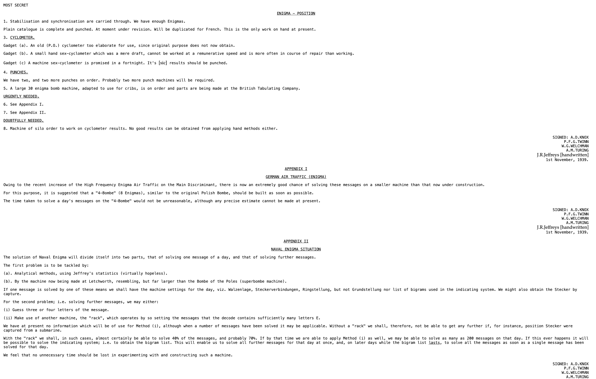
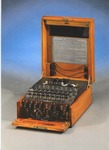

The Allied forces had success breaking cipher machines during WWII. Not only did they brek the German Enigma Machine, but they also broke the Japanese naval code during the battle of Midway (JN-25b).
In 1925, the German army bought multiple cipher machines known as ENIGMA. According to Artifacts-Enigma Machine by the Central Intelligence Agency, “The Enigma’s settings offered 150,000,000,000,000,000,000 possible solutions.”
The Germans had a code book where they would take a new code for encryption every day. This made the British’s job harder because if they didn’t crack the code one day, they would have to start from scratch the next.
Luckily, “Polish intelligence was able to purchase an Enigma at a trade fair and procure a codebook from a French agent. When Poland was overrun in 1939, the Poles realized they wouldn’t have capabilities to solve the code and gave the information and machine to the Allies,” (CIA).
By the end of the war, Alan Turing and the Bletchley Park crew were able to use the bombe machine and the code book to read 10 percent of all German Enigma Communications.
The United States also had success with decryption during the Second World War. The Battle of Midway was a pivotal naval engagement in the Pacific theater. The United States Navy, aided by skilled code breakers led by Captain Joseph Rochefort at Pearl Harbor's Station HYPO, intercepted
and deciphered Japanese communications regarding an imminent attack on Midway Island. By sending a false message indicating a water shortage at Midway (referred to as "AF" in Japanese codes), the Americans confirmed the attack's target. Armed with this intelligence,
the U.S. Navy prepared a strategic defense and launched successful counterattacks against the Japanese fleet on June 4, 1942. The decisive American victory at Midway turned the tide of the Pacific War, forcing the Japanese Navy onto the defensive for the remainder of the conflict.
Below is a report on the Enigma decipherment. It was signed by the Chief British cryptanalyst in 1939. The report documents the value of the gift from Poland and the progress Alan Turing and his team were making with their developments. According to the description at the top of the report,
“A first Bombe (called Victory) was delivered from Letchworth to Bletchley Park in March 1940. This was soon used for decipherment of German Air Force messages, and more Bombes were built thereafter. But it was to take Turing another year until the regular decipherment of naval Enigma was achieved,” (1939). You can see the real text from Alan Turing and the team in 1939 along with a picture of the Enigma machine below.


Citations:
"Enigma Machine" (2004). Bulmash Family Holocaust Collection. 2014.1.238. https://digital.kenyon.edu/bulmash/498
“National Archives.” National Archives and Records Administration, National Archives and Records Administration, www.archives.gov/. Accessed 12 June 2024.
Turing, Alan. “Report on Enigma Decipherment.” Enigma Report, 1 Nov. 1939, www.turing.org.uk/sources/nov39.html